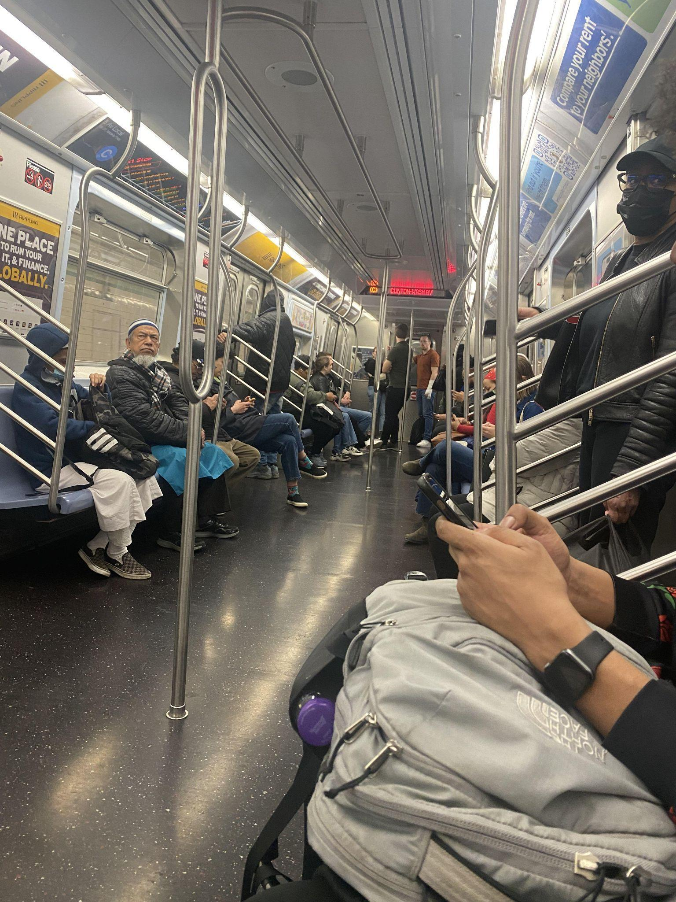
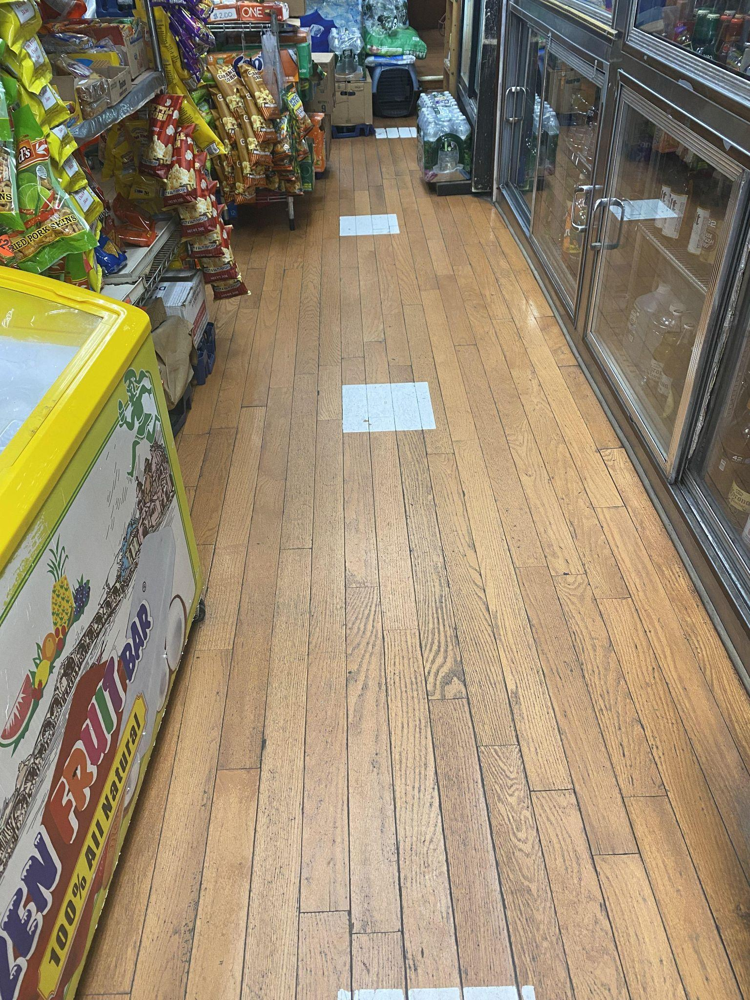
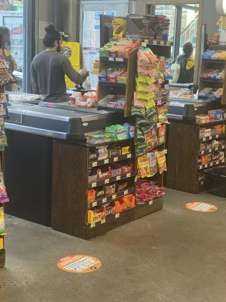
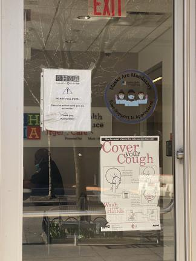
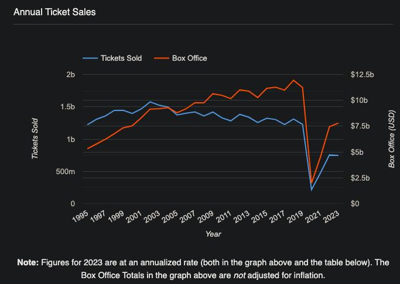

New York City Still Isn't Over COVID-19
Date: April 02, 2023
On my last day of living in Brooklyn, I passed by a local park in my neighborhood. The playground's open gates groaned under the weight of snow piling on them from above. The vibrant colors of the rising sun had faded long ago, leaving a mud-colored gloom overhead. Though the gates of the park were open, welcoming children to visit as they always had, this playground was empty. Just a few short years ago, I would see kids playing in the snow whenever I passed this park. The depths of winter are always a gloomy time, but the playgrounds and parks of Brooklyn used to be a beacon of happiness whose light shined through the misery. Simply roll up a snowball and throw it at whoever was nearby, and in no time the sorrows of the post-holiday season would fade away, replaced by the crunch of snow and peals of laughter. Now, this park and others like it are shells of their former selves, their gates only open in a weak attempt to persuade New York City that things are back to normal now. The barren, rusted interiors of these decrepit playgrounds reveal the truth. Brooklyn parents are unconvinced. New Yorkers don't want to talk about the reason why these entertainment centers have been all but abandoned, as they'd rather quietly change their habits and get it out of their heads. They'd rather pretend the pandemic is over… and pretend that they are over COVID-19.
The empty playgrounds and packed buses of Brooklyn represent a strange contradiction in the minds of New York City dwellers. No one living in the city cares about the restrictions posed by COVID-19 anymore. People pack themselves in buses and train stations like sardines, refusing to give up their spot on the vehicle in their rush to get to school, work, or home on time.

Passengers sit in a C train, filling up all the seats in the car. Notably, the passengers are sitting very close to each other.
In grocery stores and pharmacies, I can still see the stickers that were placed on the floor back in 2020 to mark where you're supposed to stand in line according to social distancing rules. No one follows them. Shoppers stand as they did before 2020; far enough away from the person in front of them to be comfortable, but close enough that no one can cut between them and steal their place in line.


[Left] Squares of white paint mark the places where shoppers are "supposed" to stand at a
corner store according to social distancing guidelines.
[Right] Stickers that read "Attention Customers / Please Practice Social Distancing / MAINTAIN
A DISTANCE 6' FROM OTHERS" are placed on the ground at a supermarket. A customer
stands on the checkout line.
Restaurants, fast food joints, clinics, and other essential businesses have signs "requiring" mask use, layered on top of signs "requiring" proof of COVID-19 vaccination. Just like the queue stickers, neither customers nor employees bat an eye as I ignore the signs and walk right in, with no mask in sight and my vaccination card hidden away in my purse. With the state of emergency at least officially over, these "requirements" only have as much power as businesses are willing to give them. And at the end of the day, any business worth its salt would prefer your money over its sense of moral purity. Any workplace would rather maintain its employees than micromanage them over vaccinations that nearly everyone has gotten anyway, or masks that everyone just takes off once they're out of sight. Universities like LIU Brooklyn will post their vaccine and mask "requirements" on their website to make students feel safe, then allow those same students to walk freely around campus, without bothering to check if they're doing their part.

The sign on the upper right reads "Masks Are Mandatory / Your Support Is Appreciated". An employee can be seen inside, wearing a mask under their chin.
And yet, the culture of New York City has been permanently marked by the COVID-19 pandemic. The playground I used to pass by on my way to school isn't the only place in my former neighborhood that was cleaned out by the pandemic. A few blocks away from my old apartment stands a movie theater that, judging by its 4.2 star rating on Google reviews, should be pretty popular. I remember walking by the theater on the way to school, and being able to tell when a hot new movie had come out without having to check the release date online. April 26th was the loudest day of 2019, as Marvel fans from all over Brooklyn came pouring into Grand Street to watch Avengers: Endgame together. An mob of fans pooled outside the theater, wearing Marvel merchandise and sharing crackpot theories about how the climax of the Marvel Cinematic Universe would play out. A few highly dedicated film-goers came in full cosplay and were immediately swarmed by delighted strangers. April 26th became an impromptu festival, the sound of which could be heard all across Brooklyn.
After 2020, Williamsburg Cinemas changed, and it hasn't been the same since. When LIU Brooklyn initially reopened, my routine on school days returned to roughly what it was in 2019. So, I passed by that theater on the way to school just as I always had. Peering through the glass walls and doors of the theater, there was a miserable emptiness that would become typical of entertainment centers in New York City and across the country. When a new movie comes out, the same people who once stormed the theaters en masse now hesitate, calculating in their minds whether it would be more worthwhile to watch the film at home on streaming services. One might occasionally see a small group of customers milling about in the theater when the big movies come out, desperate to maintain the sense of normalcy created by the space's continued presence. However, on most days after 2020, I saw no one but gloomy theater employees, standing behind the concession stand while sluggishly preparing massive amounts of popcorn that, most likely, no one would ever eat.
My little neighborhood theater is far from an outlier in this regard. Ticket sales and box office revenue across America dropped massively between 2019 and 2020. And while ticket sales have somewhat recovered from the precipitous plunge they took in 2020, they're still not even close to 2019 numbers, three years later.

Restaurants were similarly devastated by COVID-19. The State of the Restaurant Industry report claimed that, "From mid- March to the end of 2020, the restaurant and food service industry lost an estimated $240B in sales." That revenue has mostly recovered since then, but the figure alone doesn't tell the whole story. Brick-and-mortar restaurants are still closing, and there is a growing trend of "ghost kitchens" that only serve food to people ordering takeout online through services like UberEats and Doordash. Even now, takeout and delivery sales make up more revenue than they did in 2019 at 60% of restaurants across the country. Takeout and delivery are taking up a larger portion of the restaurant industry even as the restrictions that bound the restaurant industry in 2020 have long since lifted.
People speak with their feet, and more than ever New Yorkers are walking away from in-person entertainment centers and restaurants, towards methods of securing similar experiences at home. Nowadays, more people would rather watch movies on Netflix than on the silver screen. They would rather have their food delivered to them through Doordash, than sit down at a restaurant to eat. And my neighbors would rather entertain their children at home than populate that nameless, empty park on a gloomy winter's day.
So why the contradiction? Why did New Yorkers toss aside COVID guidelines as soon as they were no longer restrictions, but then seclude themselves at home? If the entire city were just collectively pretending to care about COVID, statistics on movie ticket sales, in-person restaurants, and other entertainment centers would have returned to 2019 levels by now. It would be as if the pandemic never happened. Clearly that's not the case. So are we instead deciding to give COVID a measured response now that we've been largely left to our own devices? Are we scrambling to figure out what to do with ourselves? Are we simply behaving with the esotericism typical of a large collective?
I can't answer that with any authority, I can only speculate. But I think it's a sort of collective trauma response. I recognize the privilege I hold when I can say I managed to escape 2020 relatively unscathed by the COVID-19 pandemic. I'm lucky enough not to have lost any family members or close friends to the disease. My parents were able to work from home, so our family didn't lose its income from the shutdowns. I was largely connecting with my friends online prior to 2020, so my social life wasn't greatly disrupted by the city shutdowns. I was in the junior year of my undergraduate program during 2020, so I wasn't missing out on major school events like a high school or college senior would. My family caught COVID early in 2020, which was a little scary, but we all had very mild cases and only two of us suffered long-COVID symptoms afterwards. Once vaccines became available, my family and I were able to move on with our lives as normal.
But I know I was lucky. I know people for whom each of those things were not true. I have friends who lost multiple family members to COVID. I know people who lost their businesses and their homes due to the shutdowns. I know people who were socialites prior to 2020, for whom every day they couldn't go out and talk to their friends and loved ones in person was abject torture. I know people who lost their one and only opportunity to attend their own prom and graduation because 2020 happened to be their senior year. I know people who were deeply, irreparably traumatized by the COVID-19 pandemic. And I can see that trauma in the way that people have changed their behavior in the years after the restrictions were lifted.
I can see it in the way that they rushed to get vaccines as soon as possible. I can see it in the way they counted down the days before restrictions would be lifted, only to avoid the entertainment centers that they were so excited to go to when they were finally given the chance. I can see it in the way they ignore the little things that make them feel normal, like the space between each other on the train and the "requirements" for masks indoors. I can see it in the way they leave the signs of the pandemic in plain sight, preferring to look away than take them off and make it real. I can see it in the way they don't want to hear about, talk about, think about, COVID-19 at all. They want to get it out of their heads like a bad dream, but they can't.
In short, New York City never really went "back to normal" after the COVID-19 restrictions were lifted. The year of forced isolation, of feeling like our country was abandoning us, of rapid changes to our lives that we never had time to get used to, cut our city too deeply. We are all still adjusting. We are all still healing.